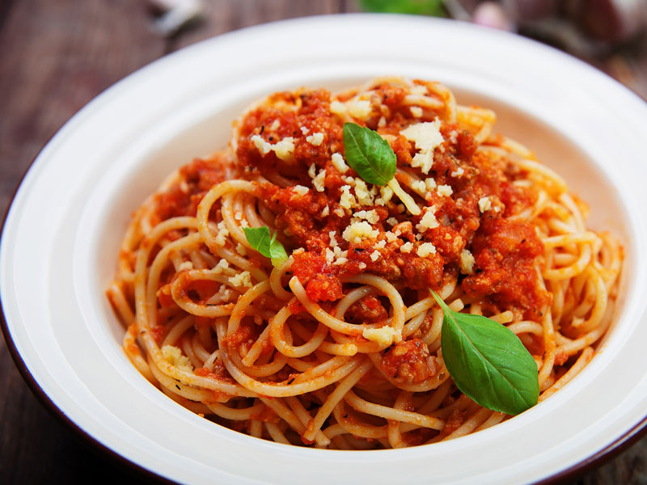

Spaghetti

Description: A classic, usually served with meatballs.
Ingredients
- Spaghetti Noodles
- Ground Beef (1 lb.)
- Spaghetti Sauce
- Optional: some veggies like onions.
Steps:
- First boil the noodles to al dente, it will give you directions on the packaging.
- Meanwhile, brown the beef and onions in a pan
- Also, start to heat up your sauce however you like
- When all are completed, mix them together and then enjoy.
Click here to go to the homepage.